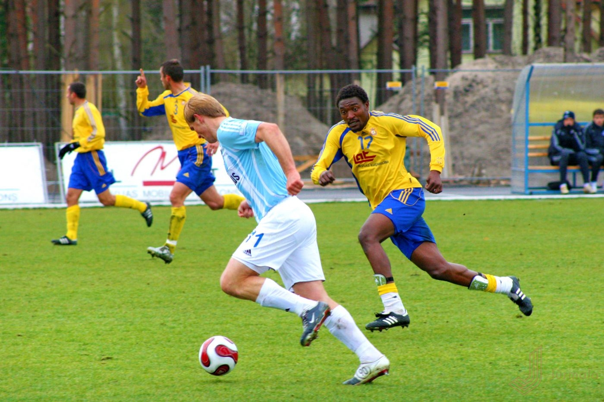

futbolas
Futbolas: Europos Lyga 2020/2021 gyvai - rezultatai, susitikimai - Scoreboard.com

Futbolas, Europa: Europos Lyga 2020/2021 rezultatai gyvai, susitikimai
reklama reklama reklama Atgal: Lietuvių Bahasa Indonesia Bahasa Melayu Čeština Dansk Deutsch English/Australia English/International English/U.S. English/UK Español Français Hrvatski Italiano Magyar Nederlands Norsk Polski Português Português/Brasil Română Srpski Slovenčina Slovenščina Suomi Svenska Tiếng Việt Türkçe Български език Ελληνικά Русский 한국어 Українська Top rezultatai Futbolas Krepšinis Tenisas Ledo Ritulys Beisbolas Am. futbolas Daugiau sporto Kita Am. futbolas Austr. futbolas Autosportas Badmintonas Bandis Beisbolas Boksas Dviračių sportas Futbolas Futsal Golfas Kabaddi Krepšinis Kriketas Ledo Ritulys MMA Netbolas Papl. futbolas Papl. tinklinis Rankinis Regbio Lyga Regbis Smiginis Snukeris Stalo tenisas Suomių beisbolas Tenisas Tinklinis Vandensvydis eSports Žiemos sportas Žirgų lenktynės Žolės riedulys Žolės riedulys reklama reklamaFutbolas Europa
Europos Lyga 2020/2021 Santrauka Rezultatai Tvarkaraštis Lentelė Archyvas Loading... Naujausi rezultatai Rodyti daugiau rungtynių results SA÷1¬~ZA÷EUROPA: Europos Lyga - Kvalifikacija¬ZEE÷ClDjv3V5¬ZB÷6¬ZY÷Europa¬ZC÷KhZ6BcYe¬ZD÷t¬ZE÷tvzjoTbh¬ZF÷0¬ZO÷0¬ZG÷2¬ZH÷6_ClDjv3V5¬ZJ÷1¬ZL÷/lt/futbolas/europa/europos-lyga/¬ZX÷00Europa 006Europa0020000000001000Europos Lyga028kacija000¬ZCC÷0¬ZAF÷Europa¬~AA÷6VGUISFE¬AD÷1601578800¬ADE÷1601578800¬AB÷3¬CR÷3¬AC÷11¬CX÷Rio Ave (Por)¬ER÷Finalas¬RW÷0¬AX÷1¬AO÷1601589165¬BX÷-1¬WQ÷¬WN÷ACM¬AF÷AC Milan (Ita)¬JB÷WpT9CC6j¬WV÷ac-milan¬AS÷2¬AZ÷0¬BZ÷1¬GRB÷0¬AH÷3¬AU÷1¬BB÷0¬BD÷1¬WM÷RIO¬AE÷Rio Ave (Por)¬JA÷hfU5Dhip¬WU÷rio-ave¬AZ÷0¬AJ÷1¬GRA÷0¬AG÷2¬AT÷1¬BA÷0¬BC÷1¬AW÷1¬~AA÷25YMj8sq¬AD÷1601578800¬ADE÷1601578800¬AB÷3¬CR÷3¬AC÷3¬CX÷Sportingas (Por)¬ER÷Finalas¬RW÷0¬AX÷1¬AO÷1601585481¬BX÷-1¬WQ÷¬WN÷LAS¬AF÷LASK (Aut)¬JB÷E7Ph1Od2¬WV÷lask-linz¬AS÷2¬AZ÷2¬BZ÷1¬GRB÷0¬AH÷4¬BB÷1¬BD÷3¬WM÷SPO¬AE÷Sportingas (Por)¬JA÷zHQl24sd¬WU÷sporting¬AJ÷1¬GRA÷0¬AG÷1¬BA÷1¬BC÷0¬AW÷1¬~AA÷nkja3mGR¬AD÷1601578800¬ADE÷1601578800¬AB÷3¬CR÷3¬AC÷3¬CX÷Tottenham (Eng)¬ER÷Finalas¬RW÷0¬AX÷1¬AO÷1601585320¬BX÷-1¬WQ÷¬WN÷HAI¬AF÷M. Haifa (Isr)¬JB÷thYjzes0¬WV÷m-haifa¬GRB÷0¬AH÷2¬BB÷1¬BD÷1¬WM÷TOT¬AE÷Tottenham (Eng)¬JA÷SlUnyySg¬WU÷tottenham¬AS÷1¬AZ÷1¬BY÷1¬GRA÷0¬AG÷7¬BA÷4¬BC÷3¬AW÷1¬~AA÷hjZsePN7¬AD÷1601577900¬ADE÷1601577900¬AB÷3¬CR÷3¬AC÷3¬CX÷AEK Athens FC (Gre)¬ER÷Finalas¬RW÷0¬AX÷1¬AO÷1601584722¬BX÷-1¬WQ÷¬WN÷WOL¬AF÷Volfsburgas (Ger)¬JB÷hY2UWth5¬WV÷volfsburgas¬GRB÷0¬AH÷1¬BB÷1¬BD÷0¬WM÷AEK¬AE÷AEK Athens FC (Gre)¬JA÷Es4QXMxa¬WU÷aek¬AS÷1¬AZ÷1¬BY÷1¬GRA÷0¬AG÷2¬BA÷0¬BC÷2¬AW÷1¬~AA÷tdXQkSdk¬AD÷1601577900¬ADE÷1601577900¬AB÷3¬CR÷3¬AC÷3¬CX÷Reindžers (Sco)¬ER÷Finalas¬RW÷0¬AX÷1¬AO÷1601584506¬BX÷-1¬WQ÷¬WN÷GAL¬AF÷Galatasaray (Tur)¬JB÷rs4x9zG8¬WV÷galtasarajus¬GRB÷0¬AH÷1¬BB÷0¬BD÷1¬WM÷RAN¬AE÷Reindžers (Sco)¬JA÷4j5Y9G02¬WU÷rangers¬AS÷1¬AZ÷1¬BY÷1¬GRA÷0¬AG÷2¬BA÷0¬BC÷2¬AW÷1¬~AA÷Eazvd581¬AD÷1601577000¬ADE÷1601577000¬AB÷3¬CR÷3¬AC÷3¬CX÷Bazelis (Sui)¬ER÷Finalas¬RW÷0¬AX÷1¬AO÷1601583804¬BX÷-1¬WQ÷¬WM÷BAS¬AE÷Bazelis (Sui)¬JA÷6H0IZr8n¬WU÷basel¬GRA÷0¬AG÷1¬BA÷0¬BC÷1¬WN÷CSK¬AF÷CSKA Sofia (Bul)¬JB÷p8aMY2Nh¬WV÷cska-sofia¬AS÷2¬AZ÷2¬BZ÷1¬GRB÷0¬AH÷3¬BB÷0¬BD÷3¬AW÷1¬~AA÷r3d5m8en¬AD÷1601577000¬ADE÷1601577000¬AB÷3¬CR÷3¬AC÷3¬CX÷Dundalk (Irl)¬ER÷Finalas¬RW÷0¬AX÷1¬AO÷1601583599¬BX÷-1¬WQ÷¬WN÷KLA¬AF÷Klaksvik (Fai)¬JB÷nBMlnUFO¬WV÷klaksvik¬GRB÷0¬AH÷1¬BB÷0¬BD÷1¬WM÷DUN¬AE÷Dundalk (Irl)¬JA÷8KNpmA0I¬WU÷dundalkas¬AS÷1¬AZ÷1¬BY÷1¬GRA÷0¬AG÷3¬BA÷1¬BC÷2¬AW÷1¬~AA÷b7ApdkmJ¬AD÷1601577000¬ADE÷1601577000¬AB÷3¬CR÷3¬AC÷3¬CX÷Jong Bois (Sui)¬ER÷Finalas¬RW÷0¬AX÷1¬AO÷1601583669¬BX÷-1¬WQ÷¬WN÷TIR¬AF÷KF Tirana (Alb)¬JB÷QiYCGZ97¬WV÷tirana¬AK÷1¬GRB÷0¬AH÷0¬BB÷0¬BD÷0¬WM÷YOU¬AE÷Jong Bois (Sui)¬JA÷n1Z8HFf1¬WU÷young-boys¬AS÷1¬AZ÷1¬BY÷2¬GRA÷0¬AG÷3¬BA÷1¬BC÷2¬AW÷1¬~AA÷p46tcVXC¬AD÷1601575200¬ADE÷1601575200¬AB÷3¬CR÷3¬AC÷3¬CX÷Dynamo Brest (Blr)¬ER÷Finalas¬RW÷0¬AX÷1¬AO÷1601581741¬BX÷-1¬WQ÷¬WN÷LUD¬AF÷Ludogorets (Bul)¬JB÷hvz5Ieue¬WV÷ludogorets¬AS÷2¬AZ÷2¬BZ÷1¬GRB÷0¬AH÷2¬BB÷0¬BD÷2¬WM÷BRE¬AE÷Dynamo Brest (Blr)¬JA÷vyW0JyQl¬WU÷dynamo-brest¬GRA÷0¬AG÷0¬BA÷0¬BC÷0¬AW÷1¬~AA÷tI8125te¬AD÷1601575200¬ADE÷1601575200¬AB÷3¬CR÷3¬AC÷3¬CX÷FC Copenhagen (Den)¬ER÷Finalas¬RW÷0¬AX÷1¬AO÷1601581924¬BX÷-1¬WQ÷¬WN÷RIJ¬AF÷Rijeka (Cro)¬JB÷2LqcYjqK¬WV÷rijeka¬AS÷2¬AZ÷2¬BZ÷1¬GRB÷0¬AH÷1¬BB÷1¬BD÷0¬WM÷COP¬AE÷FC Copenhagen (Den)¬JA÷4zRgZWTD¬WU÷fc-kopenhaga¬GRA÷0¬AG÷0¬BA÷0¬BC÷0¬AW÷1¬~AA÷hSje4T0L¬AD÷1601575200¬ADE÷1601575200¬AB÷3¬CR÷3¬AC÷3¬CX÷FK Sarajevo (Bih)¬ER÷Finalas¬RW÷0¬AX÷1¬AO÷1601581969¬BX÷-1¬WQ÷¬WN÷CEL¬AF÷Seltik (Sco)¬JB÷YRUrxHCm¬WV÷celtic¬AS÷2¬AZ÷2¬BZ÷1¬GRB÷0¬AH÷1¬BB÷0¬BD÷1¬WM÷SAR¬AE÷FK Sarajevo (Bih)¬JA÷fyWvwccs¬WU÷sarajevo¬GRA÷0¬AG÷0¬BA÷0¬BC÷0¬AW÷1¬~AA÷feDQJ808¬AD÷1601575200¬ADE÷1601575200¬AB÷3¬CR÷3¬AC÷3¬CX÷Legia (Pol)¬ER÷Finalas¬RW÷0¬AX÷1¬AO÷1601581952¬BX÷-1¬WQ÷¬WN÷QAR¬AF÷Qarabag (Aze)¬JB÷0b6xVKMH¬WV÷qarabag-agdam¬AS÷2¬AZ÷2¬BZ÷1¬GRB÷0¬AH÷3¬BB÷0¬BD÷3¬WM÷LEG¬AE÷Legia (Pol)¬JA÷ne2YV07B¬WU÷legia¬GRA÷0¬AG÷0¬BA÷0¬BC÷0¬AW÷1¬~AA÷MaY9IYwM¬AD÷1601575200¬ADE÷1601575200¬AB÷3¬CR÷3¬AC÷3¬CX÷St. Liegė (Bel)¬ER÷Finalas¬RW÷0¬AX÷1¬AO÷1601581910¬BX÷-1¬WQ÷¬WN÷MOL¬AF÷MOL Fehervar (Hun)¬JB÷fPadLWzS¬WV÷mol-fehervar-fc¬GRB÷0¬AH÷1¬BB÷1¬BD÷0¬WM÷LIE¬AE÷St. Liegė (Bel)¬JA÷GY0hMCLL¬WU÷st-liege¬AS÷1¬AZ÷1¬BY÷1¬GRA÷0¬AG÷3¬BA÷0¬BC÷3¬AW÷1¬~AA÷tWm8rnv2¬AD÷1601573400¬ADE÷1601573400¬AB÷3¬CR÷3¬AC÷3¬CX÷H. Byr Ševa (Isr)¬ER÷Finalas¬RW÷0¬AX÷1¬AO÷1601580076¬BX÷-1¬WQ÷¬WN÷PLZ¬AF÷Plzenas (Cze)¬JB÷UczCNHcf¬WV÷plzen¬GRB÷0¬AH÷0¬BB÷0¬BD÷0¬WM÷BEE¬AE÷H. Byr Ševa (Isr)¬JA÷j7y8Ocrl¬WU÷h-beer-sheva¬AS÷1¬AZ÷1¬BY÷1¬GRA÷0¬AG÷1¬BA÷1¬BC÷0¬AW÷1¬~AA÷r9cuCmBi¬AD÷1601571600¬ADE÷1601571600¬AB÷3¬CR÷3¬AC÷3¬CX÷Ararat-Armenia (Arm)¬ER÷Finalas¬RW÷0¬AX÷1¬AO÷1601578418¬BX÷-1¬WQ÷¬WN÷CRV¬AF÷Crvena zvezda (Srb)¬JB÷vwwoGi7k¬WV÷crvena-zvezda¬AS÷2¬AZ÷2¬BZ÷1¬GRB÷0¬AH÷2¬BB÷1¬BD÷1¬WM÷AVA¬AE÷Ararat-Armenia (Arm)¬JA÷QZYtHXiq¬WU÷ararat-armenia¬GRA÷0¬AG÷1¬BA÷0¬BC÷1¬AM÷Namų rungtynės žaidžiamos kitame stadione.¬AW÷1¬~AA÷fZyj7VG2¬AD÷1601571600¬ADE÷1601571600¬AB÷3¬CR÷3¬AC÷3¬CX÷Charleroi (Bel)¬ER÷Finalas¬RW÷0¬AX÷1¬AO÷1601578309¬BX÷-1¬WQ÷¬WN÷LEC¬AF÷Lečas (Pol)¬JB÷xOwKLeS6¬WV÷lech¬AS÷2¬AZ÷2¬BZ÷1¬AK÷1¬GRB÷0¬AH÷2¬BB÷2¬BD÷0¬WM÷CHA¬AE÷Charleroi (Bel)¬JA÷bXvGMyD0¬WU÷charleroi¬GRA÷0¬AG÷1¬BA÷0¬BC÷1¬AW÷1¬~AA÷YPzf6kW8¬AD÷1601571600¬ADE÷1601571600¬AB÷3¬CR÷3¬AC÷3¬CX÷D. Zagreb (Cro)¬ER÷Finalas¬RW÷0¬AX÷1¬AO÷1601578536¬BX÷-1¬WQ÷¬WN÷FLO¬AF÷Flora (Est)¬JB÷plsSJZdJ¬WV÷f-talinas¬GRB÷0¬AH÷1¬BB÷0¬BD÷1¬WM÷DIN¬AE÷D. Zagreb (Cro)¬JA÷WpwOKFsD¬WU÷din-zagreb¬AS÷1¬AZ÷1¬BY÷1¬GRA÷0¬AG÷3¬BA÷2¬BC÷1¬AW÷1¬~AA÷dWDnWLr2¬AD÷1601571600¬ADE÷1601571600¬AB÷3¬CR÷3¬AC÷3¬CX÷Liberecas (Cze)¬ER÷Finalas¬RW÷0¬AX÷1¬AO÷1601578399¬BX÷-1¬WQ÷¬WM÷LIB¬AE÷Liberecas (Cze)¬JA÷pfpr0QEm¬WU÷liberec¬AS÷1¬AZ÷1¬BY÷1¬GRA÷0¬AG÷1¬BA÷0¬BC÷1¬WN÷APO¬AF÷APOEL (Cyp)¬JB÷OpqnapUg¬WV÷apoel¬GRB÷0¬AH÷0¬BB÷0¬BD÷0¬AW÷1¬~AA÷OAsRb7Or¬AD÷1601571600¬ADE÷1601571600¬AB÷3¬CR÷3¬AC÷3¬CX÷Malmo FF (Swe)¬ER÷Finalas¬RW÷0¬AX÷1¬AO÷1601578307¬BX÷-1¬WQ÷¬WN÷GRA¬AF÷Granada CF (Esp)¬JB÷E5WbYYBC¬WV÷granada¬AS÷2¬AZ÷2¬BZ÷1¬GRB÷0¬AH÷3¬BB÷1¬BD÷2¬WM÷MAL¬AE÷Malmo FF (Swe)¬JA÷zFXfZEd6¬WU÷malmo¬GRA÷0¬AG÷1¬BA÷1¬BC÷0¬AW÷1¬~AA÷E1yrvXnG¬AD÷1601571600¬ADE÷1601571600¬AB÷3¬CR÷3¬AC÷3¬CX÷Rosenborgas (Nor)¬ER÷Finalas¬RW÷0¬AX÷1¬AO÷1601578273¬BX÷-1¬WQ÷¬WN÷PSV¬AF÷PSV (Ned)¬JB÷xb8hIMLE¬WV÷psv¬AS÷2¬AZ÷2¬BZ÷1¬GRB÷0¬AH÷2¬BB÷1¬BD÷1¬WM÷ROS¬AE÷Rosenborgas (Nor)¬JA÷Of4lJ268¬WU÷rosenborg¬GRA÷0¬AG÷0¬BA÷0¬BC÷0¬AW÷1¬~AA÷hhznwi2M¬AD÷1601566200¬ADE÷1601566200¬AB÷3¬CR÷3¬AC÷3¬CX÷CFR Cluj (Rou)¬ER÷Finalas¬RW÷0¬AX÷1¬AO÷1601572825¬BX÷-1¬WQ÷¬WN÷KUP¬AF÷KuPS (Fin)¬JB÷AB60G0jR¬WV÷kups¬GRB÷0¬AH÷1¬BB÷0¬BD÷1¬WM÷CFR¬AE÷CFR Cluj (Rou)¬JA÷WK7dHtyL¬WU÷cfr-cluj¬AS÷1¬AZ÷1¬BY÷1¬GRA÷0¬AG÷3¬BA÷2¬BC÷1¬AW÷1¬~ZA÷EUROPA: Europos Lyga - Grupių Etapas¬ZEE÷ClDjv3V5¬ZB÷6¬ZY÷Europa¬ZC÷xUq2CwJk¬ZD÷t¬ZE÷tvzjoTbh¬ZF÷0¬ZO÷0¬ZG÷1¬ZH÷6_ClDjv3V5¬ZJ÷97¬ZL÷/lt/futbolas/europa/europos-lyga/¬ZX÷00Europa 006Europa0020000000002000Europos Lyga028Etapas000¬ZCC÷0¬ZAF÷Europa¬~AA÷67dxmFwR¬AD÷1603393200¬ADE÷1603393200¬AB÷3¬CR÷3¬AC÷3¬CX÷Braga¬ER÷1 etapas¬RW÷0¬AX÷1¬AO÷1603399837¬BX÷-1¬WQ÷¬WN÷AEK¬AF÷AEK Athens FC¬JB÷Kvmv9aA1¬WV÷aek¬GRB÷0¬AH÷0¬BB÷0¬BD÷0¬WM÷BRA¬AE÷Braga¬JA÷QHmzAuee¬WU÷braga¬AS÷1¬AZ÷1¬GRA÷0¬AG÷3¬BA÷1¬BC÷2¬AW÷1¬~AA÷UPFfIcZS¬AD÷1603393200¬ADE÷1603393200¬AB÷3¬CR÷3¬AC÷3¬CX÷D. Zagreb¬ER÷1 etapas¬RW÷0¬AX÷1¬AO÷1603399890¬BX÷-1¬WQ÷¬WN÷FEY¬AF÷Feinordas¬JB÷SxvlJbja¬WV÷feyenoord¬AS÷0¬AZ÷0¬AK÷1¬GRB÷0¬AH÷0¬BB÷0¬BD÷0¬WM÷DIN¬AE÷D. Zagreb¬JA÷YFvpKvyg¬WU÷din-zagreb¬AS÷0¬AZ÷0¬GRA÷0¬AG÷0¬BA÷0¬BC÷0¬AW÷1¬~AA÷ljAgV4UE¬AD÷1603393200¬ADE÷1603393200¬AB÷3¬CR÷3¬AC÷3¬CX÷Hofenheimas¬ER÷1 etapas¬RW÷0¬AX÷1¬AO÷1603399906¬BX÷-1¬WQ÷¬WN÷CRV¬AF÷Crvena zvezda¬JB÷UcvLxpmk¬WV÷crvena-zvezda¬GRB÷0¬AH÷0¬BB÷0¬BD÷0¬WM÷HOF¬AE÷Hofenheimas¬JA÷0OZGwQXr¬WU÷hoffenheim¬AS÷1¬AZ÷1¬GRA÷0¬AG÷2¬BA÷0¬BC÷2¬AW÷1¬~AA÷ClZ4rZor¬AD÷1603393200¬ADE÷1603393200¬AB÷3¬CR÷3¬AC÷3¬CX÷Leicester¬ER÷1 etapas¬RW÷0¬AX÷1¬AO÷1603399797¬BX÷-1¬WQ÷¬WM÷LEI¬AE÷Leicester¬JA÷Ysir8JP7¬WU÷leicester¬AS÷1¬AZ÷1¬GRA÷0¬AG÷3¬BA÷2¬BC÷1¬WN÷ZOR¬AF÷Zorya¬JB÷nouQW228¬WV÷zorya¬GRB÷0¬AH÷0¬BB÷0¬BD÷0¬AW÷1¬~AA÷fTAkWpF8¬AD÷1603393200¬ADE÷1603393200¬AB÷3¬CR÷3¬AC÷3¬CX÷Liberecas¬ER÷1 etapas¬RW÷0¬AX÷1¬AO÷1603399853¬BX÷-1¬WQ÷¬WN÷GNT¬AF÷Gentas¬JB÷ObCmeh3G¬WV÷gent¬GRB÷0¬AH÷0¬BB÷0¬BD÷0¬WM÷LIB¬AE÷Liberecas¬JA÷UyDqdYmA¬WU÷liberec¬AS÷1¬AZ÷1¬GRA÷0¬AG÷1¬BA÷1¬BC÷0¬AW÷1¬~AA÷KCm57tLA¬AD÷1603393200¬ADE÷1603393200¬AB÷3¬CR÷3¬AC÷3¬CX÷Ludogorets¬ER÷1 etapas¬RW÷0¬AX÷1¬AO÷1603399838¬BX÷-1¬WQ÷¬WN÷ANT¬AF÷Antverpas¬JB÷ETnmEC82¬WV÷antwerp¬AS÷2¬AZ÷2¬GRB÷0¬AH÷2¬BB÷0¬BD÷2¬WM÷LUD¬AE÷Ludogorets¬JA÷0Qb5kTV1¬WU÷ludogorets¬GRA÷0¬AG÷1¬BA÷0¬BC÷1¬AW÷1¬~AA÷EFpc92jb¬AD÷1603393200¬ADE÷1603393200¬AB÷3¬CR÷3¬AC÷3¬CX÷Maccabi Tel Aviv¬ER÷1 etapas¬RW÷0¬AX÷1¬AO÷1603399959¬BX÷-1¬WQ÷¬WN÷QAR¬AF÷Qarabag¬JB÷URsfhVoq¬WV÷qarabag-agdam¬GRB÷0¬AH÷0¬BB÷0¬BD÷0¬WM÷MAC¬AE÷Maccabi Tel Aviv¬JA÷xzjSdBwS¬WU÷m-tel-aviv¬AS÷1¬AZ÷1¬GRA÷0¬AG÷1¬BA÷1¬BC÷0¬AW÷1¬~AA÷p2grdhGs¬AD÷1603393200¬ADE÷1603393200¬AB÷3¬CR÷3¬AC÷3¬CX÷Seltik¬ER÷1 etapas¬RW÷0¬AX÷1¬AO÷1603399735¬BX÷-1¬WQ÷¬WN÷ACM¬AF÷AC Milan¬JB÷tnTbYFwD¬WV÷ac-milan¬AS÷2¬AZ÷2¬GRB÷0¬AH÷3¬BB÷2¬BD÷1¬WM÷CEL¬AE÷Seltik¬JA÷nPTfZeO6¬WU÷celtic¬GRA÷0¬AG÷1¬BA÷0¬BC÷1¬AW÷1¬~AA÷vPhneCVm¬AD÷1603393200¬ADE÷1603393200¬AB÷3¬CR÷3¬AC÷3¬CX÷Sparta Prague¬ER÷1 etapas¬RW÷0¬AX÷1¬AO÷1603400100¬BX÷-1¬WQ÷¬WN÷LIL¬AF÷Lille¬JB÷8hLpdJVJ¬WV÷lille¬AS÷2¬AZ÷2¬GRB÷0¬AH÷4¬BB÷1¬BD÷3¬WM÷SPA¬AE÷Sparta Prague¬JA÷KxS2XZhJ¬WU÷sparta-prague¬GRA÷0¬AG÷1¬BA÷0¬BC÷1¬AW÷1¬~AA÷Qkl18M54¬AD÷1603393200¬ADE÷1603393200¬AB÷3¬CR÷3¬AC÷3¬CX÷Tottenham¬ER÷1 etapas¬RW÷0¬AX÷1¬AO÷1603399928¬BX÷-1¬WQ÷¬WN÷LAS¬AF÷LASK¬JB÷2ut2j9Ge¬WV÷lask-linz¬GRB÷0¬AH÷0¬BB÷0¬BD÷0¬WM÷TOT¬AE÷Tottenham¬JA÷8Itbik1k¬WU÷tottenham¬AS÷1¬AZ÷1¬GRA÷0¬AG÷3¬BA÷2¬BC÷1¬AW÷1¬~AA÷xWnQ69Ua¬AD÷1603393200¬ADE÷1603393200¬AB÷3¬CR÷3¬AC÷3¬CX÷Vilarealis¬ER÷1 etapas¬RW÷0¬AX÷1¬AO÷1603399981¬BX÷-1¬WQ÷¬WN÷SIV¬AF÷Sivasspor¬JB÷0nAzmzA3¬WV÷sivasspor¬GRB÷0¬AH÷3¬BB÷2¬BD÷1¬WM÷VIL¬AE÷Vilarealis¬JA÷6PAWmGfc¬WU÷villarreal¬AS÷1¬AZ÷1¬GRA÷0¬AG÷5¬BA÷2¬BC÷3¬AW÷1¬~AA÷hvmHZb43¬AD÷1603393200¬ADE÷1603393200¬AB÷3¬CR÷3¬AC÷3¬CX÷Volfsbergeris AC¬ER÷1 etapas¬RW÷0¬AX÷1¬AO÷1603399861¬BX÷-1¬WQ÷¬WN÷MAS¬AF÷Maskvos CSKA¬JB÷4KWSVyz5¬WV÷maskvos-cska¬AS÷0¬AZ÷0¬GRB÷0¬AH÷1¬BB÷1¬BD÷0¬WM÷VOL¬AE÷Volfsbergeris AC¬JA÷AcXOWHKb¬WU÷wolfsberger-ac¬AS÷0¬AZ÷0¬GRA÷0¬AG÷1¬BA÷1¬BC÷0¬AM÷Namų mačai žaidžiami kitame stadijone - Wörthersee Stadion.¬AW÷1¬~AA÷rDH298k5¬AD÷1603385700¬ADE÷1603385700¬AB÷3¬CR÷3¬AC÷3¬CX÷Bajeris Leverkuzeno¬ER÷1 etapas¬RW÷0¬AX÷1¬AO÷1603392251¬BX÷-1¬WQ÷¬WN÷NIC¬AF÷Nice¬JB÷xdwly3y4¬WV÷nice¬GRB÷0¬AH÷2¬BB÷1¬BD÷1¬WM÷BAY¬AE÷Bajeris Leverkuzeno¬JA÷rZwpxqMc¬WU÷bayer-leverkusen¬AS÷1¬AZ÷1¬GRA÷0¬AG÷6¬BA÷2¬BC÷4¬AW÷1¬~AA÷OY30csuD¬AD÷1603385700¬ADE÷1603385700¬AB÷3¬CR÷3¬AC÷3¬CX÷CSKA Sofia¬ER÷1 etapas¬RW÷0¬AX÷1¬AO÷1603392385¬BX÷-1¬WQ÷¬WN÷CFR¬AF÷CFR Cluj¬JB÷8r0UgEn7¬WV÷cfr-cluj¬AS÷2¬AZ÷2¬GRB÷0¬AH÷2¬BB÷0¬BD÷2¬WM÷CSK¬AE÷CSKA Sofia¬JA÷0I0QffX0¬WU÷cska-sofia¬GRA÷0¬AG÷0¬BA÷0¬BC÷0¬AW÷1¬~AA÷A5fzAKOI¬AD÷1603385700¬ADE÷1603385700¬AB÷3¬CR÷3¬AC÷3¬CX÷Dundalk¬ER÷1 etapas¬RW÷0¬AX÷1¬AO÷1603392496¬BX÷-1¬WQ÷¬WN÷MOL¬AF÷Moldė¬JB÷UgCj6rxU¬WV÷molde¬AS÷2¬AZ÷2¬GRB÷0¬AH÷2¬BB÷0¬BD÷2¬WM÷DUN¬AE÷Dundalk¬JA÷zXCn7OMN¬WU÷dundalkas¬GRA÷0¬AG÷1¬BA÷1¬BC÷0¬AM÷Namų mačai žaidžiami kitame stadijone - Tallaght Stadium.¬AW÷1¬~AA÷OWYXOmkh¬AD÷1603385700¬ADE÷1603385700¬AB÷3¬CR÷3¬AC÷3¬CX÷H. Byr Ševa¬ER÷1 etapas¬RW÷0¬AX÷1¬AO÷1603392544¬BX÷-1¬WQ÷¬WN÷SLA¬AF÷Slavija Praha¬JB÷jJP6tbDq¬WV÷slavia-prague¬GRB÷0¬AH÷1¬BB÷0¬BD÷1¬WM÷BEE¬AE÷H. Byr Ševa¬JA÷bRXvov5S¬WU÷h-beer-sheva¬AS÷1¬AZ÷1¬GRA÷0¬AG÷3¬BA÷1¬BC÷2¬AM÷Namų mačai žaidžiami kitame stadijone - HaMoshava Stadium.¬AW÷1¬~AA÷tAEebNP6¬AD÷1603385700¬ADE÷1603385700¬AB÷3¬CR÷3¬AC÷3¬CX÷Jong Bois¬ER÷1 etapas¬RW÷0¬AX÷1¬AO÷1603392388¬BX÷-1¬WQ÷¬WN÷ROM¬AF÷AS Roma¬JB÷MR1MezIf¬WV÷associazione-sportiva-roma¬AS÷2¬AZ÷2¬GRB÷0¬AH÷2¬BB÷0¬BD÷2¬WM÷YOU¬AE÷Jong Bois¬JA÷S42IdG2l¬WU÷young-boys¬GRA÷0¬AG÷1¬BA÷1¬BC÷0¬AW÷1¬~AA÷GQcBx7Ji¬AD÷1603385700¬ADE÷1603385700¬AB÷3¬CR÷3¬AC÷3¬CX÷Lečas¬ER÷1 etapas¬RW÷0¬AX÷1¬AO÷1603392359¬BX÷-1¬WQ÷¬WM÷LEC¬AE÷Lečas¬JA÷CALEuwpm¬WU÷lech¬GRA÷0¬AG÷2¬BA÷1¬BC÷1¬WN÷BEN¬AF÷Benfika¬JB÷tpQIvcag¬WV÷benfica¬AS÷2¬AZ÷2¬GRB÷0¬AH÷4¬BB÷2¬BD÷2¬AW÷1¬~AA÷pvTfzxfL¬AD÷1603385700¬ADE÷1603385700¬AB÷3¬CR÷3¬AC÷3¬CX÷Napoli¬ER÷1 etapas¬RW÷0¬AX÷1¬AO÷1603392563¬BX÷-1¬WQ÷¬WN÷ALK¬AF÷Alkmaras¬JB÷ML2g0VRT¬WV÷alkmaar¬AS÷2¬AZ÷2¬GRB÷0¬AH÷1¬BB÷0¬BD÷1¬WM÷NAP¬AE÷Napoli¬JA÷Splj1BCN¬WU÷napoli¬GRA÷0¬AG÷0¬BA÷0¬BC÷0¬AW÷1¬~AA÷6FjOZ43A¬AD÷1603385700¬ADE÷1603385700¬AB÷3¬CR÷3¬AC÷3¬CX÷PAOK¬ER÷1 etapas¬RW÷0¬AX÷1¬AO÷1603392293¬BX÷-1¬WQ÷¬WN÷OMO¬AF÷Omonia¬JB÷SKEKbIjP¬WV÷omonija¬AS÷0¬AZ÷0¬GRB÷0¬AH÷1¬BB÷1¬BD÷0¬WM÷PAO¬AE÷PAOK¬JA÷0EQxzZDO¬WU÷paok¬AS÷0¬AZ÷0¬GRA÷0¬AG÷1¬BA÷0¬BC÷1¬AW÷1¬~AA÷Oj1Jzol4¬AD÷1603385700¬ADE÷1603385700¬AB÷3¬CR÷3¬AC÷3¬CX÷PSV¬ER÷1 etapas¬RW÷0¬AX÷1¬AO÷1603392577¬BX÷-1¬WQ÷¬WN÷GRA¬AF÷Granada CF¬JB÷MNRYzFbI¬WV÷granada¬AS÷2¬AZ÷2¬GRB÷0¬AH÷2¬BB÷0¬BD÷2¬WM÷PSV¬AE÷PSV¬JA÷S0SUyeqC¬WU÷psv¬GRA÷0¬AG÷1¬BA÷1¬BC÷0¬AW÷1¬~AA÷tWkWA09C¬AD÷1603385700¬ADE÷1603385700¬AB÷3¬CR÷3¬AC÷3¬CX÷Rapid Viena¬ER÷1 etapas¬RW÷0¬AX÷1¬AO÷1603392552¬BX÷-1¬WQ÷¬WN÷ARS¬AF÷Arsenal¬JB÷dtEr847H¬WV÷arsenal¬AS÷2¬AZ÷2¬GRB÷0¬AH÷2¬BB÷0¬BD÷2¬WM÷RAP¬AE÷Rapid Viena¬JA÷lGEv9phB¬WU÷rapid-vienna¬GRA÷0¬AG÷1¬BA÷0¬BC÷1¬AW÷1¬~AA÷KjfQkHg8¬AD÷1603385700¬ADE÷1603385700¬AB÷3¬CR÷3¬AC÷3¬CX÷Rijeka¬ER÷1 etapas¬RW÷0¬AX÷1¬AO÷1603392562¬BX÷-1¬WQ÷¬WN÷RSO¬AF÷Real Sociedad¬JB÷URahI3mF¬WV÷real-sociedad¬AS÷2¬AZ÷2¬GRB÷0¬AH÷1¬BB÷0¬BD÷1¬WM÷RIJ¬AE÷Rijeka¬JA÷z50lJqY8¬WU÷rijeka¬GRA÷0¬AG÷0¬BA÷0¬BC÷0¬AW÷1¬~AA÷SOVlL5lH¬AD÷1603385700¬ADE÷1603385700¬AB÷3¬CR÷3¬AC÷3¬CX÷St. Liegė¬ER÷1 etapas¬RW÷0¬AX÷1¬AO÷1603392476¬BX÷-1¬WQ÷¬WN÷RAN¬AF÷Reindžers¬JB÷A9NwSJFm¬WV÷rangers¬AS÷2¬AZ÷2¬GRB÷0¬AH÷2¬BB÷1¬BD÷1¬WM÷LIE¬AE÷St. Liegė¬JA÷GnOZSa0s¬WU÷st-liege¬GRA÷0¬AG÷0¬BA÷0¬BC÷0¬AW÷1¬~ 181 Tvarkaraštis Rodyti daugiau rungtynių fixtures SA÷1¬~ZA÷EUROPA: Europos Lyga - Grupių Etapas¬ZEE÷ClDjv3V5¬ZB÷6¬ZY÷Europa¬ZC÷xUq2CwJk¬ZD÷t¬ZE÷tvzjoTbh¬ZF÷0¬ZO÷0¬ZG÷1¬ZH÷6_ClDjv3V5¬ZJ÷97¬ZL÷/lt/futbolas/europa/europos-lyga/¬ZX÷00Europa 006Europa0020000000002000Europos Lyga028Etapas000¬ZCC÷0¬ZAF÷Europa¬~AA÷vwYK9Bps¬AD÷1603994100¬ADE÷1603994100¬AB÷1¬CR÷1¬AC÷1¬CX÷AC Milan¬ER÷2 etapas¬RW÷0¬AX÷0¬BX÷-1¬WQ÷¬WN÷SPA¬AF÷Sparta Prague¬JB÷UqsDn6bN¬WV÷sparta-prague¬GRB÷0¬WM÷ACM¬AE÷AC Milan¬JA÷zNs9mnqH¬WU÷ac-milan¬GRA÷0¬AW÷1¬~AA÷rg7G0Y7Q¬AD÷1603994100¬ADE÷1603994100¬AB÷1¬CR÷1¬AC÷1¬CX÷AEK Athens FC¬ER÷2 etapas¬RW÷0¬AX÷0¬BX÷-1¬WQ÷¬WN÷LEI¬AF÷Leicester¬JB÷YLPjzx90¬WV÷leicester¬GRB÷0¬WM÷AEK¬AE÷AEK Athens FC¬JA÷vaQnyIgf¬WU÷aek¬GRA÷0¬AW÷1¬~AA÷699zNLKc¬AD÷1603994100¬ADE÷1603994100¬AB÷1¬CR÷1¬AC÷1¬CX÷Antverpas¬ER÷2 etapas¬RW÷0¬AX÷0¬BX÷-1¬WQ÷¬WN÷TOT¬AF÷Tottenham¬JB÷IPe86L6g¬WV÷tottenham¬GRB÷0¬WM÷ANT¬AE÷Antverpas¬JA÷lji471im¬WU÷antwerp¬GRA÷0¬AW÷1¬~AA÷rTuUWdlM¬AD÷1603994100¬ADE÷1603994100¬AB÷1¬CR÷1¬AC÷1¬CX÷Crvena zvezda¬ER÷2 etapas¬RW÷0¬AX÷0¬BX÷-1¬WQ÷¬WN÷LIB¬AF÷Liberecas¬JB÷YgDhncKo¬WV÷liberec¬GRB÷0¬WM÷CRV¬AE÷Crvena zvezda¬JA÷KjPANDso¬WU÷crvena-zvezda¬GRA÷0¬AW÷1¬~AA÷hjDKdAl2¬AD÷1603994100¬ADE÷1603994100¬AB÷1¬CR÷1¬AC÷1¬CX÷Feinordas¬ER÷2 etapas¬RW÷0¬AX÷0¬BX÷-1¬WQ÷¬WM÷FEY¬AE÷Feinordas¬JA÷nyODTHY1¬WU÷feyenoord¬GRA÷0¬WN÷VOL¬AF÷Volfsbergeris AC¬JB÷0hRfh1B2¬WV÷wolfsberger-ac¬GRB÷0¬AW÷1¬~AA÷EgyQXxZF¬AD÷1603994100¬ADE÷1603994100¬AB÷1¬CR÷1¬AC÷1¬CX÷Gentas¬ER÷2 etapas¬RW÷0¬AX÷0¬BX÷-1¬WQ÷¬WN÷HOF¬AF÷Hofenheimas¬JB÷IswqSgZT¬WV÷hoffenheim¬GRB÷0¬WM÷GNT¬AE÷Gentas¬JA÷l8YvTZJN¬WU÷gent¬GRA÷0¬AW÷1¬~AA÷0pOwMuz4¬AD÷1603994100¬ADE÷1603994100¬AB÷1¬CR÷1¬AC÷1¬CX÷LASK¬ER÷2 etapas¬RW÷0¬AX÷0¬BX÷-1¬WQ÷¬WM÷LAS¬AE÷LASK¬JA÷dGfC5uMa¬WU÷lask-linz¬GRA÷0¬WN÷LUD¬AF÷Ludogorets¬JB÷jwfG4ay6¬WV÷ludogorets¬GRB÷0¬AW÷1¬~AA÷McogEixQ¬AD÷1603994100¬ADE÷1603994100¬AB÷1¬CR÷1¬AC÷1¬CX÷Lille¬ER÷2 etapas¬RW÷0¬AX÷0¬BX÷-1¬WQ÷¬WN÷CEL¬AF÷Seltik¬JB÷MJw5lSTA¬WV÷celtic¬GRB÷0¬WM÷LIL¬AE÷Lille¬JA÷Sdv1k8E4¬WU÷lille¬GRA÷0¬AW÷1¬~AA÷EaEGcjZe¬AD÷1603994100¬ADE÷1603994100¬AB÷1¬CR÷1¬AC÷1¬CX÷Maskvos CSKA¬ER÷2 etapas¬RW÷0¬AX÷0¬BX÷-1¬WQ÷¬WN÷DIN¬AF÷D. Zagreb¬JB÷8pP9UcJe¬WV÷din-zagreb¬GRB÷0¬WM÷MAS¬AE÷Maskvos CSKA¬JA÷ENP5Vw4k¬WU÷maskvos-cska¬GRA÷0¬AW÷1¬~AA÷pdjY4maC¬AD÷1603994100¬ADE÷1603994100¬AB÷1¬CR÷1¬AC÷1¬CX÷Qarabag¬ER÷2 etapas¬RW÷0¬AX÷0¬BX÷-1¬WQ÷¬WM÷QAR¬AE÷Qarabag¬JA÷n3CnpYgM¬WU÷qarabag-agdam¬GRA÷0¬WN÷VIL¬AF÷Vilarealis¬JB÷tQBjqh9S¬WV÷villarreal¬GRB÷0¬AW÷1¬~AA÷SKuw47EI¬AD÷1603994100¬ADE÷1603994100¬AB÷1¬CR÷1¬AC÷1¬CX÷Sivasspor¬ER÷2 etapas¬RW÷0¬AX÷0¬BX÷-1¬WQ÷¬WN÷MAC¬AF÷Maccabi Tel Aviv¬JB÷C82MwWWk¬WV÷m-tel-aviv¬GRB÷0¬WM÷SIV¬AE÷Sivasspor¬JA÷Io3IvCHq¬WU÷sivasspor¬GRA÷0¬AW÷1¬~AA÷QHCB1EhK¬AD÷1603994100¬ADE÷1603994100¬AB÷1¬CR÷1¬AC÷1¬CX÷Zorya¬ER÷2 etapas¬RW÷0¬AX÷0¬BX÷-1¬WQ÷¬WN÷BRA¬AF÷Braga¬JB÷08Rrxbvl¬WV÷braga¬GRB÷0¬WM÷ZOR¬AE÷Zorya¬JA÷hrSvwvPs¬WU÷zorya¬GRA÷0¬AW÷1¬~AA÷YqBm0qef¬AD÷1604001600¬ADE÷1604001600¬AB÷1¬CR÷1¬AC÷1¬CX÷AS Roma¬ER÷2 etapas¬RW÷0¬AX÷0¬BX÷-1¬WQ÷¬WN÷CSK¬AF÷CSKA Sofia¬JB÷IVCr3IPK¬WV÷cska-sofia¬GRB÷0¬WM÷ROM¬AE÷AS Roma¬JA÷ld8v4bAE¬WU÷associazione-sportiva-roma¬GRA÷0¬AW÷1¬~AA÷v5vvpX4d¬AD÷1604001600¬ADE÷1604001600¬AB÷1¬CR÷1¬AC÷1¬CX÷Alkmaras¬ER÷2 etapas¬RW÷0¬AX÷0¬BX÷-1¬WQ÷¬WN÷RIJ¬AF÷Rijeka¬JB÷QwFYuXLu¬WV÷rijeka¬GRB÷0¬WM÷ALK¬AE÷Alkmaras¬JA÷lIwTKmjU¬WU÷alkmaar¬GRA÷0¬AW÷1¬~AA÷KG1NCMv0¬AD÷1604001600¬ADE÷1604001600¬AB÷1¬CR÷1¬AC÷1¬CX÷Arsenal¬ER÷2 etapas¬RW÷0¬AX÷0¬BX÷-1¬WQ÷¬WN÷DUN¬AF÷Dundalk¬JB÷2aCSBn8h¬WV÷dundalkas¬GRB÷0¬WM÷ARS¬AE÷Arsenal¬JA÷8xDOCShn¬WU÷arsenal¬GRA÷0¬AW÷1¬~AA÷zXeehecG¬AD÷1604001600¬ADE÷1604001600¬AB÷1¬CR÷1¬AC÷1¬CX÷Benfika¬ER÷2 etapas¬RW÷0¬AX÷0¬BX÷-1¬WQ÷¬WN÷LIE¬AF÷St. Liegė¬JB÷6cUVWgqP¬WV÷st-liege¬GRB÷0¬WM÷BEN¬AE÷Benfika¬JA÷GEljO1uP¬WU÷benfica¬GRA÷0¬AW÷1¬~AA÷YaaBFOfs¬AD÷1604001600¬ADE÷1604001600¬AB÷1¬CR÷1¬AC÷1¬CX÷CFR Cluj¬ER÷2 etapas¬RW÷0¬AX÷0¬BX÷-1¬WQ÷¬WN÷YOU¬AF÷Jong Bois¬JB÷Cbu28D10¬WV÷young-boys¬GRB÷0¬WM÷CFR¬AE÷CFR Cluj¬JA÷Iytb9gnf¬WU÷cfr-cluj¬GRA÷0¬AW÷1¬~AA÷6mUjyIvF¬AD÷1604001600¬ADE÷1604001600¬AB÷1¬CR÷1¬AC÷1¬CX÷Granada CF¬ER÷2 etapas¬RW÷0¬AX÷0¬BX÷-1¬WQ÷¬WN÷PAO¬AF÷PAOK¬JB÷lfkn2icH¬WV÷paok¬GRB÷0¬WM÷GRA¬AE÷Granada CF¬JA÷fXkr3XsB¬WU÷granada¬GRA÷0¬AW÷1¬~AA÷8fPkCA5n¬AD÷1604001600¬ADE÷1604001600¬AB÷1¬CR÷1¬AC÷1¬CX÷Moldė¬ER÷2 etapas¬RW÷0¬AX÷0¬BX÷-1¬WQ÷¬WN÷RAP¬AF÷Rapid Viena¬JB÷6gdOKsiN¬WV÷rapid-vienna¬GRB÷0¬WM÷MOL¬AE÷Moldė¬JA÷CWdKLNyH¬WU÷molde¬GRA÷0¬AW÷1¬~AA÷Y1AF66ZN¬AD÷1604001600¬ADE÷1604001600¬AB÷1¬CR÷1¬AC÷1¬CX÷Nice¬ER÷2 etapas¬RW÷0¬AX÷0¬BX÷-1¬WQ÷¬WM÷NIC¬AE÷Nice¬JA÷KdtVSvqp¬WU÷nice¬GRA÷0¬WN÷BEE¬AF÷H. Byr Ševa¬JB÷EJuZRbbj¬WV÷h-beer-sheva¬GRB÷0¬AW÷1¬~AA÷OOvnxbP8¬AD÷1604001600¬ADE÷1604001600¬AB÷1¬CR÷1¬AC÷1¬CX÷Omonia¬ER÷2 etapas¬RW÷0¬AX÷0¬BX÷-1¬WQ÷¬WN÷PSV¬AF÷PSV¬JB÷tUov4DS4¬WV÷psv¬GRB÷0¬WM÷OMO¬AE÷Omonia¬JA÷n7nz5gDb¬WU÷omonija¬GRA÷0¬AW÷1¬~AA÷ALCZSgne¬AD÷1604001600¬ADE÷1604001600¬AB÷1¬CR÷1¬AC÷1¬CX÷Real Sociedad¬ER÷2 etapas¬RW÷0¬AX÷0¬BX÷-1¬WQ÷¬WN÷NAP¬AF÷Napoli¬JB÷OA6jbrdq¬WV÷napoli¬GRB÷0¬WM÷RSO¬AE÷Real Sociedad¬JA÷WErNFARG¬WU÷real-sociedad¬GRA÷0¬AW÷1¬~AA÷n7aaiFCM¬AD÷1604001600¬ADE÷1604001600¬AB÷1¬CR÷1¬AC÷1¬CX÷Reindžers¬ER÷2 etapas¬RW÷0¬AX÷0¬BX÷-1¬WQ÷¬WN÷LEC¬AF÷Lečas¬JB÷2TF1RX6n¬WV÷lech¬GRB÷0¬WM÷RAN¬AE÷Reindžers¬JA÷86GcSDit¬WU÷rangers¬GRA÷0¬AW÷1¬~AA÷jwLA7nKH¬AD÷1604001600¬ADE÷1604001600¬AB÷1¬CR÷1¬AC÷1¬CX÷Slavija Praha¬ER÷2 etapas¬RW÷0¬AX÷0¬BX÷-1¬WQ÷¬WN÷BAY¬AF÷Bajeris Leverkuzeno¬JB÷ryk3XKzT¬WV÷bayer-leverkusen¬GRB÷0¬WM÷SLA¬AE÷Slavija Praha¬JA÷lEkaY0LM¬WU÷slavia-prague¬GRA÷0¬AW÷1¬~AA÷CUMv25Qs¬AD÷1604598900¬ADE÷1604598900¬AB÷1¬CR÷1¬AC÷1¬CX÷AS Roma¬ER÷3 etapas¬RW÷0¬AX÷0¬BX÷-1¬WQ÷¬WN÷CFR¬AF÷CFR Cluj¬JB÷pSHlsy31¬WV÷cfr-cluj¬GRB÷0¬WM÷ROM¬AE÷AS Roma¬JA÷j5IprHme¬WU÷associazione-sportiva-roma¬GRA÷0¬AW÷1¬~AA÷xzwxO74b¬AD÷1604598900¬ADE÷1604598900¬AB÷1¬CR÷1¬AC÷1¬CX÷Benfika¬ER÷3 etapas¬RW÷0¬AX÷0¬BX÷-1¬WQ÷¬WN÷RAN¬AF÷Reindžers¬JB÷OWNEvxrd¬WV÷rangers¬GRB÷0¬WM÷BEN¬AE÷Benfika¬JA÷U9OAuISk¬WU÷benfica¬GRA÷0¬AW÷1¬~AA÷Ch9J5QlU¬AD÷1604598900¬ADE÷1604598900¬AB÷1¬CR÷1¬AC÷1¬CX÷H. Byr Ševa¬ER÷3 etapas¬RW÷0¬AX÷0¬BX÷-1¬WQ÷¬WN÷BAY¬AF÷Bajeris Leverkuzeno¬JB÷tQXKk2jc¬WV÷bayer-leverkusen¬GRB÷0¬WM÷BEE¬AE÷H. Byr Ševa¬JA÷hAvwRIDd¬WU÷h-beer-sheva¬GRA÷0¬AM÷Namų mačai žaidžiami kitame stadijone - HaMoshava Stadium.¬AW÷1¬~AA÷xza7wm4o¬AD÷1604598900¬ADE÷1604598900¬AB÷1¬CR÷1¬AC÷1¬CX÷Lečas¬ER÷3 etapas¬RW÷0¬AX÷0¬BX÷-1¬WQ÷¬WN÷LIE¬AF÷St. Liegė¬JB÷YJMAtJUt¬WV÷st-liege¬GRB÷0¬WM÷LEC¬AE÷Lečas¬JA÷GvzqoaMP¬WU÷lech¬GRA÷0¬AW÷1¬~AA÷fVuI4v5T¬AD÷1604598900¬ADE÷1604598900¬AB÷1¬CR÷1¬AC÷1¬CX÷Ludogorets¬ER÷3 etapas¬RW÷0¬AX÷0¬BX÷-1¬WQ÷¬WN÷TOT¬AF÷Tottenham¬JB÷QkuZ48Vl¬WV÷tottenham¬GRB÷0¬WM÷LUD¬AE÷Ludogorets¬JA÷WSuV5lGr¬WU÷ludogorets¬GRA÷0¬AW÷1¬~AA÷IRmdFzIe¬AD÷1604598900¬ADE÷1604598900¬AB÷1¬CR÷1¬AC÷1¬CX÷Omonia¬ER÷3 etapas¬RW÷0¬AX÷0¬BX÷-1¬WQ÷¬WN÷GRA¬AF÷Granada CF¬JB÷Cf5EmhrO¬WV÷granada¬GRB÷0¬WM÷OMO¬AE÷Omonia¬JA÷IX5AlYSH¬WU÷omonija¬GRA÷0¬AW÷1¬~AA÷j5HaGG2k¬AD÷1604598900¬ADE÷1604598900¬AB÷1¬CR÷1¬AC÷1¬CX÷PAOK¬ER÷3 etapas¬RW÷0¬AX÷0¬BX÷-1¬WQ÷¬WN÷PSV¬AF÷PSV¬JB÷vs76kEDB¬WV÷psv¬GRB÷0¬WM÷PAO¬AE÷PAOK¬JA÷A722jfb5¬WU÷paok¬GRA÷0¬AW÷1¬~AA÷6DcJD2Pg¬AD÷1604598900¬ADE÷1604598900¬AB÷1¬CR÷1¬AC÷1¬CX÷Rapid Viena¬ER÷3 etapas¬RW÷0¬AX÷0¬BX÷-1¬WQ÷¬WN÷DUN¬AF÷Dundalk¬JB÷UoEKD8wt¬WV÷dundalkas¬GRB÷0¬WM÷RAP¬AE÷Rapid Viena¬JA÷rcdD5BoJ¬WU÷rapid-vienna¬GRA÷0¬AW÷1¬~AA÷bo9VTZWl¬AD÷1604598900¬ADE÷1604598900¬AB÷1¬CR÷1¬AC÷1¬CX÷Real Sociedad¬ER÷3 etapas¬RW÷0¬AX÷0¬BX÷-1¬WQ÷¬WN÷ALK¬AF÷Alkmaras¬JB÷hOqJGjCA¬WV÷alkmaar¬GRB÷0¬WM÷RSO¬AE÷Real Sociedad¬JA÷OluFHWd4¬WU÷real-sociedad¬GRA÷0¬AW÷1¬~AA÷bsgUly9E¬AD÷1604598900¬ADE÷1604598900¬AB÷1¬CR÷1¬AC÷1¬CX÷Rijeka¬ER÷3 etapas¬RW÷0¬AX÷0¬BX÷-1¬WQ÷¬WN÷NAP¬AF÷Napoli¬JB÷xh30GsIR¬WV÷napoli¬GRB÷0¬WM÷RIJ¬AE÷Rijeka¬JA÷rV3dHN2L¬WU÷rijeka¬GRA÷0¬AW÷1¬~AA÷h0dlBOLo¬AD÷1604598900¬ADE÷1604598900¬AB÷1¬CR÷1¬AC÷1¬CX÷Sivasspor¬ER÷3 etapas¬RW÷0¬AX÷0¬BX÷-1¬WQ÷¬WN÷QAR¬AF÷Qarabag¬JB÷jJmGaDg9¬WV÷qarabag-agdam¬GRB÷0¬WM÷SIV¬AE÷Sivasspor¬JA÷ddlC0gv3¬WU÷sivasspor¬GRA÷0¬AW÷1¬~AA÷4MIbAlza¬AD÷1604598900¬ADE÷1604598900¬AB÷1¬CR÷1¬AC÷1¬CX÷Slavija Praha¬ER÷3 etapas¬RW÷0¬AX÷0¬BX÷-1¬WQ÷¬WN÷NIC¬AF÷Nice¬JB÷UVZuwP6i¬WV÷nice¬GRB÷0¬WM÷SLA¬AE÷Slavija Praha¬JA÷GSobEuUj¬WU÷slavia-prague¬GRA÷0¬AW÷1¬~AA÷SQKY5ERF¬AD÷1604606400¬ADE÷1604606400¬AB÷1¬CR÷1¬AC÷1¬CX÷AC Milan¬ER÷3 etapas¬RW÷0¬AX÷0¬BX÷-1¬WQ÷¬WN÷LIL¬AF÷Lille¬JB÷bXtUHKZk¬WV÷lille¬GRB÷0¬WM÷ACM¬AE÷AC Milan¬JA÷UcxQI0Kq¬WU÷ac-milan¬GRA÷0¬AW÷1¬~AA÷CASq0bDp¬AD÷1604606400¬ADE÷1604606400¬AB÷1¬CR÷1¬AC÷1¬CX÷Antverpas¬ER÷3 etapas¬RW÷0¬AX÷0¬BX÷-1¬WQ÷¬WN÷LAS¬AF÷LASK¬JB÷C6ws3n01¬WV÷lask-linz¬GRB÷0¬WM÷ANT¬AE÷Antverpas¬JA÷4tvw4Spe¬WU÷antwerp¬GRA÷0¬AW÷1¬~AA÷CjbFErAm¬AD÷1604606400¬ADE÷1604606400¬AB÷1¬CR÷1¬AC÷1¬CX÷Arsenal¬ER÷3 etapas¬RW÷0¬AX÷0¬BX÷-1¬WQ÷¬WM÷ARS¬AE÷Arsenal¬JA÷Aqb57XG6¬WU÷arsenal¬GRA÷0¬WN÷MOL¬AF÷Moldė¬JB÷46c96iWC¬WV÷molde¬GRB÷0¬AW÷1¬~AA÷t4L4QfRk¬AD÷1604606400¬ADE÷1604606400¬AB÷1¬CR÷1¬AC÷1¬CX÷Crvena zvezda¬ER÷3 etapas¬RW÷0¬AX÷0¬BX÷-1¬WQ÷¬WN÷GNT¬AF÷Gentas¬JB÷0lDGtglN¬WV÷gent¬GRB÷0¬WM÷CRV¬AE÷Crvena zvezda¬JA÷6RDCsZYG¬WU÷crvena-zvezda¬GRA÷0¬AW÷1¬~AA÷MaCnKJ4G¬AD÷1604606400¬ADE÷1604606400¬AB÷1¬CR÷1¬AC÷1¬CX÷D. Zagreb¬ER÷3 etapas¬RW÷0¬AX÷0¬BX÷-1¬WQ÷¬WN÷VOL¬AF÷Volfsbergeris AC¬JB÷OtkAQtbP¬WV÷wolfsberger-ac¬GRB÷0¬WM÷DIN¬AE÷D. Zagreb¬JA÷zReS1cLO¬WU÷din-zagreb¬GRA÷0¬AW÷1¬~AA÷S0eVBeCd¬AD÷1604606400¬ADE÷1604606400¬AB÷1¬CR÷1¬AC÷1¬CX÷Feinordas¬ER÷3 etapas¬RW÷0¬AX÷0¬BX÷-1¬WQ÷¬WN÷MAS¬AF÷Maskvos CSKA¬JB÷OtVCZJzt¬WV÷maskvos-cska¬GRB÷0¬WM÷FEY¬AE÷Feinordas¬JA÷nLg7Ez5U¬WU÷feyenoord¬GRA÷0¬AW÷1¬~AA÷8be7KDt9¬AD÷1604606400¬ADE÷1604606400¬AB÷1¬CR÷1¬AC÷1¬CX÷Hofenheimas¬ER÷3 etapas¬RW÷0¬AX÷0¬BX÷-1¬WQ÷¬WN÷LIB¬AF÷Liberecas¬JB÷tWSAlJAR¬WV÷liberec¬GRB÷0¬WM÷HOF¬AE÷Hofenheimas¬JA÷n9T6kaeL¬WU÷hoffenheim¬GRA÷0¬AW÷1¬~AA÷fgCq1Pul¬AD÷1604606400¬ADE÷1604606400¬AB÷1¬CR÷1¬AC÷1¬CX÷Jong Bois¬ER÷3 etapas¬RW÷0¬AX÷0¬BX÷-1¬WQ÷¬WN÷CSK¬AF÷CSKA Sofia¬JB÷A59z5ve8¬WV÷cska-sofia¬GRB÷0¬WM÷YOU¬AE÷Jong Bois¬JA÷d2LhteI7¬WU÷young-boys¬GRA÷0¬AW÷1¬~AA÷xdWGuXV0¬AD÷1604606400¬ADE÷1604606400¬AB÷1¬CR÷1¬AC÷1¬CX÷Leicester¬ER÷3 etapas¬RW÷0¬AX÷0¬BX÷-1¬WQ÷¬WN÷BRA¬AF÷Braga¬JB÷rknBNbPf¬WV÷braga¬GRB÷0¬WM÷LEI¬AE÷Leicester¬JA÷lSn7OvAl¬WU÷leicester¬GRA÷0¬AW÷1¬~AA÷lzMU6fC9¬AD÷1604606400¬ADE÷1604606400¬AB÷1¬CR÷1¬AC÷1¬CX÷Seltik¬ER÷3 etapas¬RW÷0¬AX÷0¬BX÷-1¬WQ÷¬WN÷SPA¬AF÷Sparta Prague¬JB÷hYEdzTkH¬WV÷sparta-prague¬GRB÷0¬WM÷CEL¬AE÷Seltik¬JA÷bBFhy9zB¬WU÷celtic¬GRA÷0¬AW÷1¬~AA÷ITWO8Vam¬AD÷1604606400¬ADE÷1604606400¬AB÷1¬CR÷1¬AC÷1¬CX÷Vilarealis¬ER÷3 etapas¬RW÷0¬AX÷0¬BX÷-1¬WQ÷¬WN÷MAC¬AF÷Maccabi Tel Aviv¬JB÷0SXrspMp¬WV÷m-tel-aviv¬GRB÷0¬WM÷VIL¬AE÷Vilarealis¬JA÷8ztHoQDT¬WU÷villarreal¬GRA÷0¬AW÷1¬~AA÷KKLLvio7¬AD÷1604606400¬ADE÷1604606400¬AB÷1¬CR÷1¬AC÷1¬CX÷Zorya¬ER÷3 etapas¬RW÷0¬AX÷0¬BX÷-1¬WQ÷¬WM÷ZOR¬AE÷Zorya¬JA÷MuoFMIv1¬WU÷zorya¬GRA÷0¬WN÷AEK¬AF÷AEK Athens FC¬JB÷jFkJLxf7¬WV÷aek¬GRB÷0¬AW÷1¬~~ 120 2020-2021 reklama reklama Pranešimų nustatymai Pranešimai yra blokuojami naršyklės Nustatymai Kallba: Lietuvių Tamsi versija Europa Euro Čempionų Lyga Europos Lyga UEFA Nacijų lyga Europos Čempionatas iki 21 m. Europos Čempionatas iki 19 m. Pasaulio Čempionatas Europos Čempionatas iki 17 m. UEFA Super Taurė UEFA Regionų taurė Daugiau (14) UEFA Jaunių Lyga Elitinė lyga (iki 20 m.) Atlantic Taurė Baltijos Taurė Baltijos Taurė U21 Čekų-slovakų super taurė Emiratų Taurė Marbelos Taurė Premier Lyga (Krimėja) Uhreno Taurė Čempionų lyga (moterys) Moterų Europos Čempionatas Europos Čempionatas iki 19 m. Moterys Europos Čempionatas iki 17 m. Moterys Mano lygos Šalys Airija Albanija Alžyras Andora Anglija Premier Lyga Čempionatas Pirma Lyga Antra Lyga EFL taurė FA Taurė Angola Argentina Armėnija Aruba Australija Austrija Tipiko Bundės lyga Azerbaidžanas Bahreinas Baltarusija Bangladešas Belgija Jupilero Lyga Beninas Bermudai Bolivija Bosnija ir Hercegovina Botsvana Brazilija Serija A Daugiau Bulgarija Burkina Fasas Burundis DR Congo Danija Dominikos Respublika Dramblio Kaulo Krantas Džibutis Egiptas Ekvadoras Estija Etijopija Farerų Salos Fidžis Filipinai Gabonas Gambija Gana Gibraltaras Graikija Gruzija Gvatemala Gvinėja Haitis Hondūras Honkongas Indija Indonezija Irakas Iranas Islandija Ispanija LaLiga Copa del Rey Italija Serija A Serija B Italijos Taurė Izraelis JAV MLS Jamaika Japonija Jordanija Jungtiniai Arabų Emiratai Juodkalnija Kambodža Kamerūnas Kanada Kataras Kazachstanas Kenija Kinija Kipras Kirgiztanas Kiurasao Kolumbija Kongas Kosovas Kosta Rika Kroatija Kuveitas Laosas Latvija Lenkija Lesotas Libanas Liberija Libija Lichtenšteinas Lietuva A Lyga Lietuvos Taurė Liuksemburgas Makao Malaizija Malavis Maldyvai Malis Malta Marokas Mauricijus Mauritanija Meksika Moldavija Mongolija Mozambikas Myanmaras Namibija Naujoji Zelandija Nigerija Nigeris Nikaragva Norvegija Olandija Eredivisie Oman Pakistanas Palestina Panama Paragvajus Peru Pietų Afrika Premier Lyga Pietų Korėja Portugalija Primeira Lyga Prancūzija Pirma Lyga Ruanda Rumunija Rusija Réunion Salvadoras San Marinas Saudo Arabija Senegalas Serbija Seychelles Siera Leone Singapūras Sirija Slovakija Slovėnija Somalia Sudan Suomija Svazilandas Tadžikistanas Tailandas Taivanas Tanzania Togas Trinidadas ir Tobagas Tunisas Turkija Turkmenistanas Uganda Ukraina Urugvajus Uzbekistanas Velsas Venesuela Vengrija Vietnamas Vokietija Bundeslyga Antra Bundeslyga Yemenas Zambija Zimbabvė Čekija Čilė Šiaurės Airija Šiaurės Makedonija Širi Lanka Škotija Švedija Šveicarija Žaliojo Kyšulio salos Kitos varžybos Afrika Afrikos Nacijų Taurė Pasaulio Čempionatas Australija ir Okeanija Pasaulio Čempionatas Azija Azijos taurė Pasaulio Čempionatas Europa Euro Čempionų Lyga Europos Lyga UEFA Nacijų lyga Europos Čempionatas iki 21 m. Europos Čempionatas iki 19 m. Pasaulio Čempionatas Europos Čempionatas iki 17 m. Pasaulis Pasaulio Čempionatas Olimpinės žaidynės U20 Pasaulio Taurė Pasaulio Čempionatas iki 17 m. Tarptautinis Draugiškas Draugiškos klubų varžybos Pietų Amerika Amerikos Taurė Libertadoreso Taurė Pasaulio Čempionatas Šiaurės ir Centrinė Amerika Auksinė Taurė Pasaulio Čempionatas Europos Lyga gyvai per Scoreboard.com. Šis puslapis apie Europos Lyga 2020/2021, (Futbolas/Europa). Jei jūs ieškote kitų pirmenybių Europos Lyga, jūs galite pasirinkti jas viršutiniame meniu, kairėje. SekiteEuropos Lyga 2020/2021 rezultatus gyvai, galutinius rezultatus, susitikimus ir turnyrines lenteles per Scoreboard.com: čia jūs galite rasti pasižymėjusius žaidėjus, geltonas/raudonas korteles, startinias sudėtis, keitimus, bei kitas rungtynių detales. Tai pat Scoreboard.com leidžia: peržiūrėti įvairias rungtynių statistikas (kamuolių kontrolės laikas, smūgiai į/už vartų, baudos smūgiai, kampiniai, nuošalės ir pražangos), gyvus komentarus ir įvarčių video žinomesnėse futbolo lygose. Turnyrinė lentelė: Scoreaboard.com siūlo namai/išvyka/bendras [tournamen_seo] turnyrinę lentelę, 5 paskutinias komandos rungtynes, daugiau/mažiau įvarčių įmušta per kiekvienas rungtynes ir geriausių snaiperių sarašą. Rodyti daugiau Scoreboard.com Sąlygos Reklamuokis Kontaktai Sekite mus Facebook Twitter Junkitės į darbalaukio versiją Junkitės į mobilią versiją Copyright © 2012-20 Scoreboard.com | Set privacyPosted by Jack  Read more
Read more  Comments (15)
Comments (15)  2020.10.29 06:22
2020.10.29 06:22